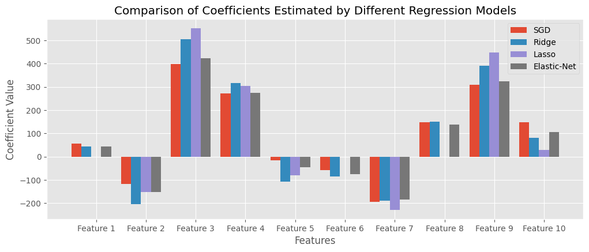
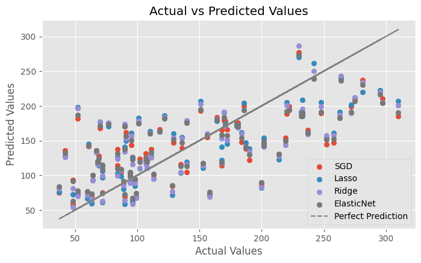

Lasso regression, Ridge regression, Elastic-Net#
以下的程式範例會使用scikit-learn內建的toy dataset: diabetes來示範。
示範的內容為比較各種linear regression的方法。
首先一樣需要把使用到的套件先import進來。
import numpy as np
import matplotlib.pyplot as plt
import pandas as pd
from sklearn.datasets import load_diabetes
from sklearn.model_selection import train_test_split
from sklearn.metrics import mean_squared_error
from sklearn.linear_model import LinearRegression
from sklearn.linear_model import SGDRegressor
from sklearn.linear_model import Lasso
from sklearn.linear_model import Ridge
from sklearn.linear_model import ElasticNet
讀入資料集，並且切分成 train 與 test 的部分。
由於資料集都已經清理好了，這邊就不做額外的處理。
# Load the diabetes dataset
diabetes = load_diabetes()
X, y = diabetes.data, diabetes.target
X_train, X_test, y_train, y_test = train_test_split(X, y, test_size=0.2, random_state=42)
首先使用OLS方法來建模，作為一個比較基準。
Linear regression - OLS#
# Creating a Linear Regression model object
ols_model = LinearRegression()
# Fitting the model to the data
ols_model.fit(X_train, y_train)
# Making predictions
y_pred_ols = ols_model.predict(X_test)
# Calculating Mean Squared Error (MSE) on test set
mse = mean_squared_error(y_test, y_pred_ols)
print("Mean Squared Error (MSE) on test set:", mse)
# Once fitted, you can get the coefficients and intercept of the linear regression line
print("Coefficient (slope):", ols_model.coef_)
print("Intercept:", ols_model.intercept_)
Mean Squared Error (MSE) on test set: 2900.193628493483
Coefficient (slope): [ 37.90402135 -241.96436231 542.42875852 347.70384391 -931.48884588
518.06227698 163.41998299 275.31790158 736.1988589 48.67065743]
Intercept: 151.34560453985995
Linear regression - Stochastic Gradient Descent#
基本上原理與gradient descent相同，但是每次更新gradient並不會遍歷所有樣本，而是只使用一個樣本。
# Creating a Linear Regression model object
sgd_model = SGDRegressor(penalty=None, eta0=0.03)
# Fitting the model to the data
sgd_model.fit(X_train, y_train)
# Making predictions
y_pred_sgd = sgd_model.predict(X_test)
# Calculating Mean Squared Error (MSE) on test set
mse = mean_squared_error(y_test, y_pred_sgd)
print("Mean Squared Error (MSE) on test set:", mse)
# Once fitted, you can get the coefficients and intercept of the linear regression line
print("Coefficient (slope):", sgd_model.coef_)
print("Intercept:", sgd_model.intercept_)
print("n of iteration:", sgd_model.n_iter_)
Mean Squared Error (MSE) on test set: 2894.132941658682
Coefficient (slope): [ 55.18650399 -116.60159734 399.51575574 271.00819307 -16.40165472
-58.09708772 -193.65743482 149.22720858 308.92582979 147.41228682]
Intercept: [151.82212349]
n of iteration: 694
Lasso regression#
lasso_model = Lasso(alpha=0.1) # You can adjust the alpha value for different levels of regularization
lasso_model.fit(X_train, y_train)
# Making predictions
y_pred_lasso = lasso_model.predict(X_test)
# Calculating Mean Squared Error (MSE) on test set
mse = mean_squared_error(y_test, y_pred_lasso)
print("Mean Squared Error (MSE) on test set:", mse)
# Printing the coefficients
print("Coefficients:", lasso_model.coef_)
print("Intercept:", lasso_model.intercept_)
print("n of iteration:", lasso_model.n_iter_)
Mean Squared Error (MSE) on test set: 2798.1934851697188
Coefficients: [ 0. -152.66477923 552.69777529 303.36515791 -81.36500664
-0. -229.25577639 0. 447.91952518 29.64261704]
Intercept: 151.57485282893947
n of iteration: 23
Ridge regression#
ridge_model = Ridge(alpha=0.1, solver='saga') # You can adjust the alpha value for different levels of regularization
ridge_model.fit(X_train, y_train)
# Making predictions
y_pred_ridge = ridge_model.predict(X_test)
# Calculating Mean Squared Error (MSE) on test set
mse = mean_squared_error(y_test, y_pred_ridge)
print("Mean Squared Error (MSE) on test set:", mse)
# Printing the coefficients
print("Coefficients:", ridge_model.coef_)
print("Intercept:", ridge_model.intercept_)
print("n of iteration:", ridge_model.n_iter_)
Mean Squared Error (MSE) on test set: 2856.4882102052666
Coefficients: [ 42.85593712 -205.49263815 505.09119249 317.09340526 -108.37848357
-86.32559246 -190.42355439 151.68163296 392.24226174 79.90804023]
Intercept: 151.45857327317384
n of iteration: [19]
Elastic-Net#
elasticnet_model = ElasticNet(alpha=0.001, l1_ratio=0.1) # You can adjust the alpha value for different levels of regularization
elasticnet_model.fit(X_train, y_train)
# Making predictions
y_pred_elasticnet = elasticnet_model.predict(X_test)
# Calculating Mean Squared Error (MSE) on test set
mse = mean_squared_error(y_test, y_pred_elasticnet)
print("Mean Squared Error (MSE) on test set:", mse)
# Printing the coefficients
print("Coefficients:", elasticnet_model.coef_)
print("Intercept:", elasticnet_model.intercept_)
print("n of iteration:", elasticnet_model.n_iter_)
Mean Squared Error (MSE) on test set: 2871.663570384975
Coefficients: [ 44.74045267 -152.77370265 424.03587528 274.70139698 -46.55802161
-76.64488847 -185.02031971 137.7521058 323.3185182 105.02020727]
Intercept: 151.72590427772332
n of iteration: 15
比較模型#
比較估計的參數#
# Extracting coefficients from all models
models = ['SGD', 'Ridge', 'Lasso', 'Elastic-Net']
coefficients = [sgd_model.coef_, ridge_model.coef_, lasso_model.coef_, elasticnet_model.coef_]
# Set ggplot style
plt.style.use('ggplot')
# Setting width of bar
bar_width = 0.2
# Plotting coefficients for each model
plt.figure(figsize=(12, 4.5))
for i, (model, coef) in enumerate(zip(models, coefficients)):
x = np.arange(1, len(coef) + 1) + i * bar_width
plt.bar(x, coef, width=bar_width, label=model)
# Adding labels and title
plt.xlabel('Features')
plt.ylabel('Coefficient Value')
plt.title('Comparison of Coefficients Estimated by Different Regression Models')
plt.xticks(np.arange(1, len(coef) + 1) + bar_width * (len(models) / 2), [f'Feature {i}' for i in range(1, len(coef) + 1)])
plt.legend()
plt.grid(True)
plt.show()

從上面的圖可以看到Lasso regression有特徵挑選的效果，有些影響較小的特徵，迴歸係數(斜率)會整個被刪除。
比較預測的值#
# Create figure
plt.figure(figsize=(8, 4.5))
# Add scatter plot for SGD Regression
plt.scatter(y_test, y_pred_sgd, label='SGD', marker='o')
# Add scatter plot for Lasso Regression
plt.scatter(y_test, y_pred_lasso, label='Lasso', marker='o')
# Add scatter plot for Ridge Regression
plt.scatter(y_test, y_pred_ridge, label='Ridge', marker='o')
# Add scatter plot for ElasticNet Regression
plt.scatter(y_test, y_pred_elasticnet, label='ElasticNet', marker='o')
# Add perfect prediction line
plt.plot(y_test, y_test, color='grey', linestyle='--', label='Perfect Prediction')
# Adding labels and title
plt.xlabel('Actual Values')
plt.ylabel('Predicted Values')
plt.title('Actual vs Predicted Values')
# Add legend
plt.legend(loc='lower right')
# Add grid
plt.grid(True)
# Show plot
plt.show()

基本上預測的結果都蠻相近的，沒有明顯差異。